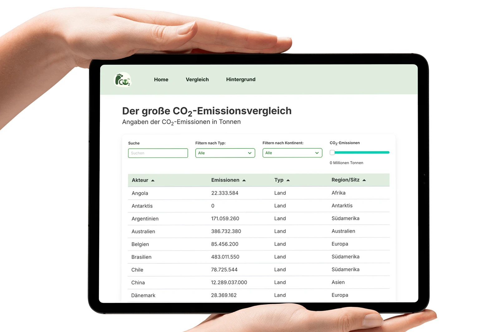

A look at my work as a web designer and the hands-on projects I've taken on during my media computing
degree. I bring together user-centred design, clear information architecture and practical web
technology.
A complete shop relaunch for custom motocross and supermoto
graphics, built with WordPress and WooCommerce. At its heart is a seamlessly integrated
live configurator that lets customers personalise their designs.
A new website for a B2B company specialising in net
installation. The focus was on clear information architecture, a reassuring visual style
and generating enquiries.
I brought a detailed, supplied design to life for a graphic
and communications designer, making precise code adjustments to match the intended
visual style.
A minimal, Scandinavian-inspired website for a holiday home
in Sweden. I designed the interface to make the property's features easy to explore and
the experience smooth on every device.
As part of my media computing degree, I've worked on practical projects that put my web
development, UI/UX design and interactive application skills into practice.
Frontend development

HTML5
CSS3
JavaScript
CO2 Footprint - Interactive Data Analysis
A responsive web app for exploring and comparing global
CO2 emissions data in a dynamic table.